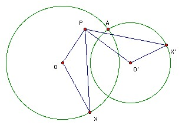

Two circles in a plane intersect. A is one of the points of intersection. Starting simultaneously from A two points move with constant speed, each traveling along its own circle in the same sense. The two points return to A simultaneously after one revolution. Prove that there is a fixed point P in the plane such that the two points are always equidistant from P.
Solution

Let the circles have centers O, O' and let the moving points by X, X. Let P be the reflection of A in the perpendicular bisector of OO'. We show that triangles POX, X'O'P are congruent. We have OX = OA (pts on circle) = O'P (reflection). Also OP = O'A (reflection) = O'X' (pts on circle). Also ∠AOX = ∠AO'X' (X and X' circle at same rate), and ∠AOP = ∠AO'P (reflection), so ∠POX = ∠PO'X'. So the triangles are congruent. Hence PX = PX'.
Another approach is to show that XX' passes through the other point of intersection of the two circles, but that involves looking at many different cases depending on the relative positions of the moving points.

Solutions are also available in Murray S Klamkin, International Mathematical Olympiads 1978-1985, MAA 1986, and in István Reiman, International Mathematical Olympiad 1959-1999, ISBN 189-8855-48-X.
© John Scholes
jscholes@kalva.demon.co.uk
12 Oct 1998
Last corrected/updated 28 Oct 03